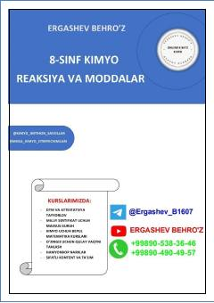

8K8-sinf o'quvchilari uchun kimyoviy reaksiyalar va moddalar bo'yicha o'quv qo'llanma.
Ushbu qo'llanma 8-sinf o'quvchilari uchun kimyoviy reaksiyalar va moddalar mavzusini o'z ichiga oladi. Kitobda kimyo fanidan imtihon savollari va mavzuga oid tushuntirishlar keltirilgan.